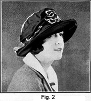

1928—The New-Way Course in Millinery and Hat Design
Lesson 19—Making Other Types of Hats
Making Other Types of Hats
Making the Transparent Hat
The transparent hats are made on wire frames, and for the hat we are about to make, you will need to make a wire frame with a round crown and a flat brim of black brace wire. This frame is made as is taught in an earlier lesson.
1. The measurements for this hat may be made as follows:
FOR THE BRIM |
FOR THE CROWN |
|||||||||
| C.F. | 3 3/4" | R.S.F. | 4 1/4" | F. to B. | 16" | |||||
| C.B. | 3 3/4" | R.S.B. | 4" | R.S. to L.S. | 15 1/4" | |||||
| R.S. | 4 3/4" | L.S.B. | 4" | R.S.F. to L.S.B. | 15 1/2" | |||||
| L.S. | 4 3/4" | L.S.F. | 4" | R.S.B. to L.S.F. | 15 3/4" | |||||
| H.S. | 24" | H.S. | 24 1/2" | |||||||
| E.W. | 48" | C.T. | 18 1/2" | |||||||
2. Cut your wires for this frame as directed in an earlier lesson, using the measures above to get the length of the wires. You will remember that the brim wires are cut the length of the diameter of the headsize plus the widths of the brim, plus two inches. For a hat made from the above measures the wire from the front to back should measure 15 1/2" plus two inches for work. This allows three and three-quarters inches for the front brim, three and three-quarters for the back brim, two inches for work, and the diameter of the headsize which is eight inches.
3. Having found the exact length of each of the four wires, proceed to cut them. Cut two headsize wires. The edge wire should be a spring wire joined with a milliner's clasp. This is an un covered Wire and should be wound with strips of maline.
4. Cut strips of maline one inch wide and wrap this wire with these strips to thoroughly cover it before it is fixed in position. This winding is done in a diagonal direction, until the entire length of the wire is covered.
5. After this wire is wrapped, proceed to make the frame in exactly the way you have been taught. The crown and the brim are made and covered separately and then joined after the covering is complete.
6. Fold your maline so there are four thicknesses, and cut a covering for the brim of the hat, allowing the maline to extend beyond the edge of the wire frame one-half inch. Now turn this edge over the edge wire and sew in position. Draw the maline tight enough to lie flat but not so tight that it pulls the frame out of shape. This covering of maline is to be on the underside of the brim. In all other hats, the first covering to be put on is the upper covering of the brim, so it is important to remember that the maline is put on the under side of the brim first.
7. When this covering is sewed in place at the edge, proceed to sew the maline to the headsize wire allowing it to extend up into the headsize and be turned over the second headsize wire. Sew this in place and trim all rough edges as closely as you can and not have the maline pull away from the frame.
8. The covering of the upper side of this brim is made of three folds of the maline. Cut the strips of maline that has been doubled. They should be four inches wide. You will need 2 5/8 yards of the first fold. This should be cut lengthwise of the material and folded lengthwise thru the center so when finished it is two inches wide and is four thicknesses of maline.
9. Begin at the center back of the hat and pin the first fold in position. Allow the folded edge to extend beyond the edge of the brim one inch. When the center back is reached, the maline should be lapped about one and one half inches. The edges should remain flat. Maline is seldom finished with a turned edge as the raw edge is sufficient finish in most places. Sew the raw edge of this fold to the hat brim using small stitches and fine thread. You will notice that this edge does not fit the brim exactly but has some fullness in it. Lay this fullness in small plaits and fasten them using a back stitch to hold them in position.
10. Apply another fold to the brim, pinning it in position and sewing it in the same way as the first fold. This fold will lap over the raw edge of the first fold about one inch.
11. A third fold is cut and sewed to the brim to finish the covering. This fold will be irregular in width as it must cover the remaining uncovered part of the brim. In some places you will find that this uncovered space is three inches wide. In other places you will find it only an inch and a half. It will be necessary to cut this fold so it will be four inches wide when finished. Pin this in position so the folded edge is an equal distance from the edge wire at all points. Draw the raw edge of this fold up towards the head-size pinning the fullness in small plaits, arranging it gracefully so that the fullness is about equal all around the brim. Sew this in place at the lower headsize wire as well as the upper headsize wire and trim off all raw edges at the upper headsize wire. This finishes your brim. If you have made this correctly, you will have a brim that is perfectly smooth on the under side and is covered by three loose folds on the top. These folds have the appearance of overlapping tucks.
Making the Crown
The crown of this hat is a round crown and should be covered with four thicknesses of maline in this way:
1. Cut a circle of four thicknesses of maline. The diameter of the circle should be 17 inches.
2. Pin the center of the circle to the center of the top of the crown and draw the maline down over the crown to the headsize so that the crown is covered as smoothly as possible, but does not pull the frame out of shape. There will be no fullness at the top of this crown but you will find fullness at the headsize and this extra material must be arranged evenly around the hat. Lay this in small plaits making as neat and smooth a finish as possible.
3. Turn the edge of this crown covering over the headsize wire and sew it in place using fine even stitches for this. Small stitches are essential where maline is used, as the material is wiry and pulls away between the stitches if they are long. This is one of the simplest crowns to make, and you should have no difficulty what ever.
Joining Brim and Crown
Match the eight points of the crown and the brim, and place the crown over the headsize of the brim and sew in position. Your hat is now ready for the lining.
1. This lining will be made of maline in this way. Cut a strip of maline 26" long, and 8" wide. This must be four thicknesses of the maline.
2. Sew one edge of this maline to the headsize as you would apply any lining beginning at the center of the back, and sewing this around carefully until the center of the back is again reached. Allow the ends of the lining to lap in order to make a good finish.
3. Make an underturning on the other edge of this lining and run a shirr string through it very near the turned edge. Now turn this lining up into the hat and draw the shirr string up until the lining fits smoothly on the inside of the crown. There should be a very small open space in the lining at the top of the crown.
4. Take a double strip of maline 14" wide and as long as you wish it to be. This strip is for the trimming of the hat which is a crush band of maline around the crown with a bow at the right side. The bow at the side regulates the length of this strip, but you will need at least two yards of double maline. Arrange this around the head- size of the crown allowing it to extend upward against the crown two and one-half inches.
5. Tack this in place and on the right side, tie an attractive bow. Sew this bow firmly in place and your hat is finished.
If you have followed these lessons throughout the course, you should have no difficulty whatever in the making and trimming of this hat.
Making the Satin Hat
A buckram frame must be made for this hat. This hat has a slightly rolling brim and a straight crown. You have already learned how to make the straight crown for this hat. Refer to this lesson and make a crown that fits your headsize perfectly.
1. The brim of this hat is made much as taught in an earlier lesson under the heading of Bowl Brim. The slashes in the edge of the brim of a hat like this are made a little shorter than the ones in a bowl brim. They are made just long enough to roll the edge slightly, being cut about one and one-half inches long and are lapped not over one-half inch. You will find that in cutting and lapping these slashes in this way the edge of the brim will turn up slightly, but the rest of the brim will lie flat as does the sailor brim.
2. The finished brim should measure at C. F. three inches, at C. B. two inches, at L. S. three and one-half inches, at R. S. three and one-half inches, R. S. B. two and one-half inches, R. S. F. three and one-quarter inches, L. S. F. three and one-quarter inches, L. S. B. two and one-half inches. The outer edge of this brim should measure thirty-nine inches.
3. The brim and crown of this hat are to be covered separately. Cut the covering according to the brim pattern and apply in exactly the same way as the covering of the sailor brim as previously explained. Refer to this lesson and follow the covering of the sailor brim up to the point where the facing is pinned over the wire to form the flange edge. Before this wire is placed in position a bias piece of satin is applied to form the roll edge. This strip of bias material is applied to the satin hat as is the bias overlap to a sailor brim.
Remember that the tension of this strip decides its position. If the strip is drawn very tight it will lie flat to the top of the brim. If it is drawn to a medium tension it will roll as it does in the hat pictured here. You will have to experiment in order to make this look just as you would have it look. Tension is the deciding factor in this work. If the tension is too tight the hat will not look well. If it is too loose the entire hat will lose its style and chic appearance.
4. After the bias fold is added the facing is turned over the wire and the flange edge sewed in place. Then the headsize opening is cut in the satin.
If you have followed the instructions given in the book and if you have learned your lessons well as you worked on them, you should be able to cover this brim without difficulty.
Covering the Crown
1. The covering of this crown is the Conventional crown drape. Make this crown of the satin according to the instructions already given. After the crown is finished embroider with wool in some simple design that is easily marked on the material with tailor's chalk.
2. After the embroidery is finished fit your satin crown over the crown frame, fit the top in position and draw the side of the crown down into graceful drapes at the one side and tack it through the buckram frame to hold it in these folds. These tacks must be very loosely taken in order to have the hat look soft and graceful.
3. Turn the headsize of the satin crown over the headsize of the buckram frame and sew it to the crinoline binding at the edge of the frame.
4. Join the crown and brim being sure that the eight points match perfectly. Line the hat using any style lining you desire, but for this hat the tailored lining is most appropriate. Your hat is now finished and ready to wear.
Covering the Straw Braid Turban
In an earlier lesson we learned to make wire frames. You were taught how to cover these frames with crinoline to make a foundation on which to sew your straw braid. We now have to learn how to sew the straw braid to this crinoline covered frame.
You have been instructed about the covering of the frame to make a foundation for your straw braid. If you have not covered a crown and brim as directed proceed to do so now, or if you do not remember how, refer to this lesson.
Sewing Straw Braid for the Brim
1. Divide the brim into six equal parts.
2. There are six wheels which form the covering for the outside of the brim. Cut a paper pattern for these wheels, making each one large enough so that the proper number covers the outside of the brim and lap one-half of an inch at their widest part, all wheels to be exactly the same size. Make six of these patterns.
3. Begin at the outer edge of one of these paper circles and pin your braid in position. Here the edge of the braid must extend one-quarter of an inch beyond the edge of your pattern. A gathering string should be run in the inner edge of this row of braid to hold the fullness in the proper position.
4. Pin the next row of braid, which is a continuation of the first row, in position, the outer edge of this just covering the inner edge of the first row. This braid is drawn towards the center so that the two edges meet at about two and a half inches from the point where the first row of braid began. Continue in this way until the center of this circle is reached and here draw the end of the braid into a rosette as shown in illustration and sew into position.
5. Make the required number of wheels in this way and attach them to the brim as shown in the illustration of the finished hat. When the wheels are finished they will lap at the sides so that the entire brim will be covered. If they do not lap, there will be small three-cornered places at the edge of the brim that will not be covered. Turn the lower edge of the wheel up into the head- size. When sewing these on, use a slanting stitch, making a short stitch on either side of the brim.
Sewing Straw Braid on the Crown
This crown is one continuous piece of braid. First pin this into position and then sew, using a short stitch on the right side and a long one on the inside of the crown.
1. Begin at the center back at the headsize. Pin the braid in place so that the lower edge of the braid extends beyond the headsize of the crown about one-fourth of an inch. The next row of braid is brought around the hat in such a way that the lower edge of this braid meets the upper edge of the first row of braid about three inches from the center of the back. Pin this in place and sew the lower edge. The lower edge of the second row of braid should just cover the upper edge of the first row.
2. Continue pinning and sewing your braid in this way, sewing each row as soon as it is pinned in position. When the top of the crown is reached the braid will be full on the inner or upper edge and a shir string should be run in the edge of this braid in order to draw it down and hold it in place.
3. Pin and sew each row as carefully as you have the sides of the crown until the center of the crown is reached. Here the end of the braid is made into a rosette and pinned into position and sewed in place. You will notice how the braid has an upward slant all around the crown when it is sewed on in one continuous piece.
Final Finish of the Hat
1. Join the crown and brim you have just made. Match the eight points of the crown and brim perfectly.
2. Early in your lessons you were taught how to make the lining. You may use any style lining you wish but it should be of lightweight material as a summer hat does not require a heavy lining.
3. Your hat will then be complete unless you care to use ribbon loops coming from beneath the front wheels which cover the brim, or you may want fancy pins, but if the brim is tacked to the crown at the side to give a slight indentation, trimming is unnecessary.
Other Kinds of Hats
Now I am sure that you understand how to make frames and apply materials so that it is only a matter of practice. However, now I am going to show you pictures of different kinds of hats and give you suggestions for making. You may vary these suggestions as the occasion arises and no doubt you will be able to add many original ideas. Styles are continually changing, and it is up to the expert milliner to be constantly studying the new types and following every new idea.
Felt Hats
Fig. 4 shows a very pretty hat made of felt. It is a little French model, but so easy to make. The part which fits close around the head is made of belting ribbon, or, of course, velvet may be used, or satin if desired. This is: left entirely up to the originality of the individual. It would be best to make a buckram foundation for this material, or crinoline may be used, if the covering material is sufficiently heavy to make it look well. The crown is made from a circle of felt which is applied plain at back and sides, while the front is finished with cartridge plaits. These plaits are very simple to make, for they are formed by gathering the felt. Care must be taken that the gathering is very even, for unless it is the appearance will not be pleasing. You see, this little hat is very plain and has absolutely no trimming, so it is necessary to have exceptionally nice workmanship to make up for the lack of trimming.
Felt does not ravel, so it is not necessary to turn in the edges. This is another point which simplifies the making of this charming little creation. The lining is applied according to the directions already given.
It is possible to make very attractive felt hats at home. It is hard to make a one-piece felt crown similar to the kinds purchased at the stores, but the sectional crowns are attractive as well as other types.
It is also possible to purchase most attractive patterns for making these felt hats at many of the pattern counters in department stores. Some stores sell the felt hat, cut and ready to sew together. The directions are very complete, so anyone who has studied millinery as you have, will have little difficulty in putting the pieces together. Many of them have embroidery designs stamped and ready to work. They are indeed very neat and pretty.
Felt can be purchased by the yard, and due to the fact that it is easy to work with, charming little hats can be made in a very short time and are so simple to put together. They are so inexpensive to make that any woman can have several hats for the price of one. You can get valuable ideas from current magazines and by watching the daily papers. Felt hats can be made in many colors and may be worn all the year around, the darker colors usually being chosen for winter.
An Attractive Close Fitting Hat
A close skull cap which may be made of a variety of materials is shown in Fig. 5. Let us first pretend that the crown part is covered with straw braid. The part that surrounds the crown may be of buckram covered with satin, or if you desire this part may also be made of braid, or I might suggest a strip of felt. This little hat clasps the head tightly, but carries its own air of style. It may be made of most any color, but is so attractive made in greens, or browns or any of the old rose shades.
You should have no trouble in making your own shapes, for they are really very simple after one gets onto the knack of doing it. This is simply a snug-fitting crown brought down lower on the sides. To gain the correct effect of the crossed pieces it may be necessary to cut several paper patterns and experiment a little to get just the right arrangement. To be sure, it takes patience, but the finished product is well worth the effort.
Satin and Straw Hat
Fig. 6 shows a stunning little hat of satin and straw. It is a close fitting little creation and could be made of a combination of colors or just a single color. In fact, it would be entirely possible to make this hat of all satin and the effect would be just as effective.
I could go on indefinitely telling you how to make different types of hats, but it really wouldn't help you as much as just sitting down and figuring out some designs for yourself. You see, in order to become an expert milliner it is so necessary to have experience, and experience can only be gained through constant study and work. Do not feel that any hat you see is too hard to make. Just sit down and figure it out systematically. If the hat you have in mind must be made with a blocked crown and you do not have a block or do not care to take the time to make it, then it may be purchased at some supply house. In fact, the whole frame may be bought if you do not care to spend the time to make your own. Of course, you should know how to make the different kinds so if you are unable to get the kind you want you can be independent and sit down and make your own.
LESSONS 18 AND 19
QUESTIONS
1. If you have a buckram shape that is slightly broken from handling, what can be done?
2. Velvet must be put on with the nap running toward the back. Is there an exception to this rule?
3. What stitch is used to hold the covering to the binding?
4. When covering the brim with velvet what must be done if the material ruffles the least bit where it is turned over the brim edge?
5. Should the grain of the material used for the facing be the same as the grain used for the top?
6. Where should joinings always be made?
7. Most hats are not worn straight—on what side should the hat tilt?
8. What materials are popular for summer hats?
9. On what kind of a frame is the transparent hat made?
10. In sewing a braid, if beginning at the lower edge, where should the start be made?